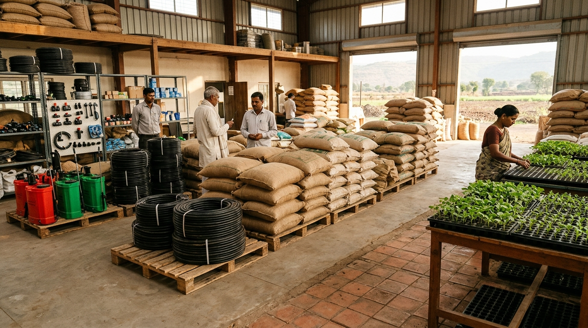
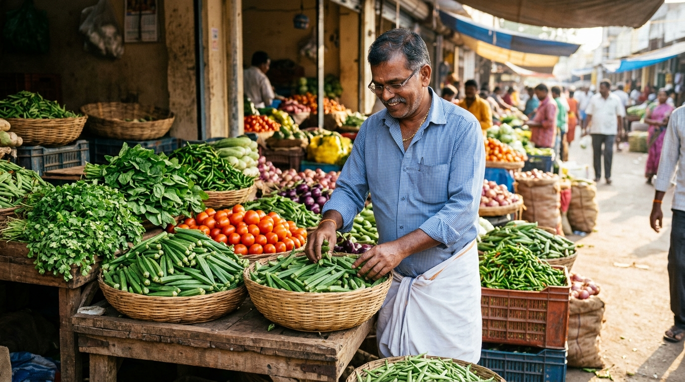
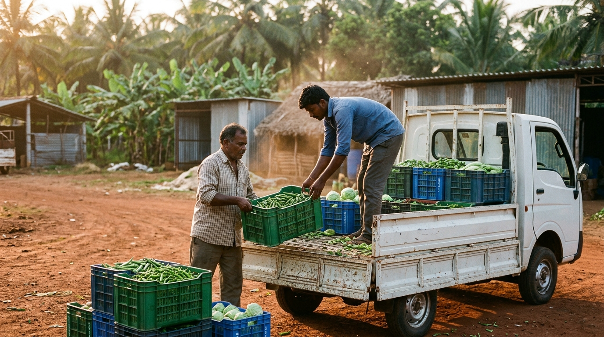
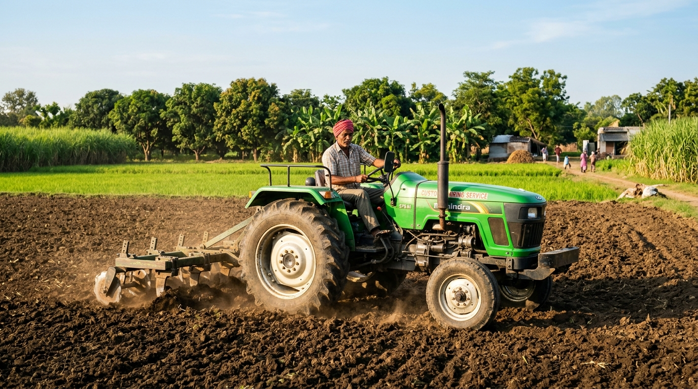
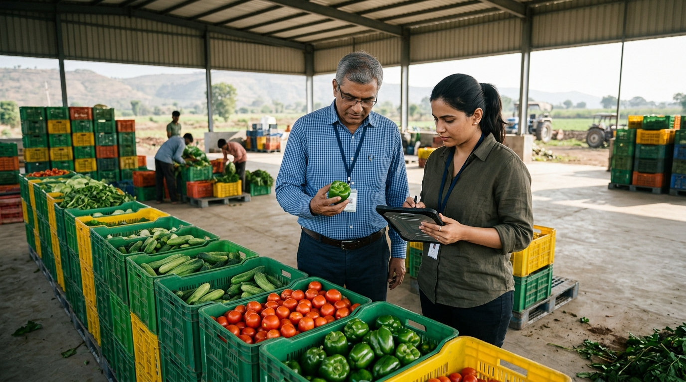
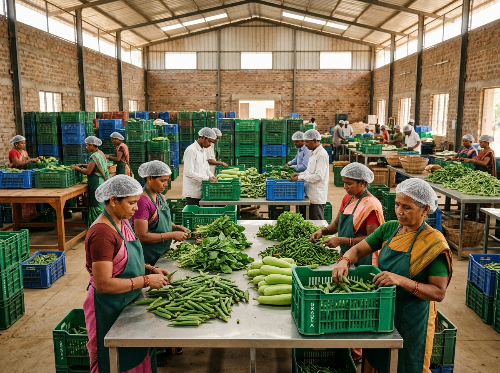

Connecting Every Link in Agriculture.
From farm-level supply to business demand, Agri2Connect is building a connected agricultural ecosystem that brings farmers, services, suppliers and markets closer together.
Demand-First Approach
Start with verified market demand.
Connected Supply Chain
Coordinate agricultural supply, services and distribution.
Phased Expansion
Scale based on validated business economics.

Tirupati, Andhra Pradesh
Agriculture Needs More Than Individual Solutions.
Agricultural participants often operate across disconnected networks of input suppliers, farmers, intermediaries, service providers, transport operators and buyers. Isolated point solutions address single steps, while end-to-end coordination gaps remain unresolved.
Fragmented Connections
Informal communication channels and fragmented trade relationships limit direct coordination between agricultural producers, service providers and commercial buyers.
Disconnected Supply and Demand
Without consolidated visibility into recurring buyer requirements, harvests and procurement volumes fall out of sync—creating localised surpluses, supply gaps and price volatility.
Operational Coordination Gaps
Gaps in harvesting, basic grading, packing, storage and transport scheduling reduce produce quality and reliability before goods reach retail and business buyers.
One Ecosystem. Multiple Connections.
An integrated value-chain framework connecting agricultural inputs, production and post-harvest flows, guided upstream by confirmed market demand.
Market Demand (Upstream Flow)
Pilot FocusDemand information flows upstream from retailers and commercial buyers toward procurement and supply planning.
Payments & Settlements
A commercial transaction layer connecting relevant participants across the ecosystem.
Labour & Mechanisation
Ecosystem SupportSupporting farming, harvesting and post-harvest operations.
Waste & By-Product Utilisation
Future PhaseFuture resource utilisation and circular economy opportunities.
Built Around Real Market Demand.
Agri2Connect follows a demand-first approach, beginning with market requirements and developing supply operations based on validated demand and sustainable economics.
Understand Demand
Identify retailers, understand recurring requirements, and consolidate demand before initiating procurement.
Connect Supply
Coordinate sourcing, procurement and fulfilment around confirmed business requirements.
Build With Evidence
Evaluate fulfilment, procurement costs, route economics and repeat demand before expanding operations.
Connecting the Agricultural Ecosystem.
Potential participants across agricultural production, inputs, retail commerce, logistics and commercial demand that Agri2Connect aims to connect.

Farmers & Farmer Groups
Connecting agricultural producers with supply networks and market opportunities.

Agricultural Suppliers
Connecting providers of seeds, fertilisers, equipment and other agricultural inputs.

Retailers & Traders
Understanding commercial demand and connecting retail businesses with produce supply.

Logistics Partners
Coordinating transportation and distribution across agricultural supply networks.

Agricultural Service Providers
Connecting labour, machinery and supporting agricultural services.

Businesses & Buyers
Building commercial relationships with businesses requiring agricultural produce.
Intended Ecosystem Participants • Demand-First Collaboration Starting With Proposed Tirupati Pilot
Building Beyond Traditional Supply Chains.
Agri2Connect aims to develop an integrated agricultural network connecting supply, procurement, services, infrastructure, logistics and markets.
Rather than building disconnected solutions, our long-term approach is to coordinate agricultural activities through a connected ecosystem that can evolve with actual market requirements.
Demand-Anchored
Sourcing guided by confirmed market demand
Evolving Coordination
Capabilities added based on operating economics

Coordinated Ecosystem Vision
Aligning aggregation, grading, packing and distribution around real demand.
Let's Build Better Connections in Agriculture.
Whether you're an agricultural business, retailer, service provider, logistics partner or investor, we'd like to explore opportunities to work together.
Proposed Pilot
Tirupati, Andhra Pradesh
Managing Director
shanmugavardhan5@gmail.comOperating Model
Demand-First Supply Coordination